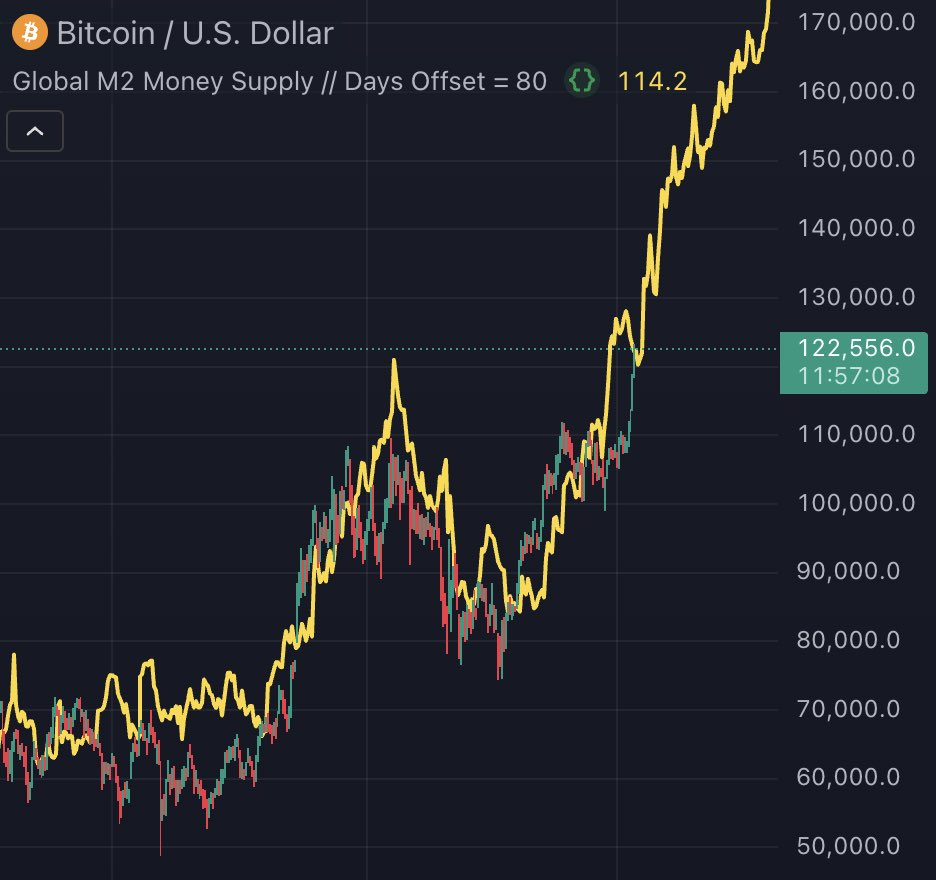

Often, you will hear people are told they need to invest their money in order for it to grow. Why is that? It's because saving in dollars or any other government currency is DESIGNED to lose value over time.
The way it loses value is very insidious. The total amount of dollars you have remain the same, but how much everything around you costs seems to be going up. So if you had $10,000 dollars in 2020 that you could put towards a home and now homes are up 50%, that 10,000 is now only buying you $5,000 worth of that same home.
Why doesn't the government stop this? Why don't they guarantee the value of the dollar remains the same over time? Well, that would mean they can't inflate the money supply by creating dollars out of thin air to pay for their spending. Sorry, but funding everything the government wants matters more to them. Social security, health care, public services, military spending, this is the cost to have these things!
Currently, the government owes 37 trillion dollars that must be paid out to fund all these different things. With this comes interest, and the interest payments are so large that they consume a significant portion of the budget, leaving less for other important services.
Imagine you make 45,000 per year, yet you spend $60,000 per year. And you keep borrowing more money to cover the difference. Eventually, you reach a point where your debt is so high that you can't keep up with the payments. This is exactly what is happening to the U.S. government.
So, do you want to be on the hook and pay the consequences for someone whose financial decisions have led to this situation? Because you no longer have to! Enter Bitcoin.
Bitcoin has no debt. It's structurally designed to just exist without the need for borrowing or creating money out of thin air. There literally is no ability to create more Bitcoin. In comparison, the M2 Global Money Supply (just a fancy way of saying all how much more money is being created out of thin air in totality around the world) continues to increase for ever and ever at accelerating rates. That just means they keep making their currency worth less and less in that insidious way I mentioned earlier.
Imagine Bitcoin is in equal footing on all the different properties that make it money as the dollar in every other aspect. Why on earth would you choose to save your wealth in the dollar that inflates forever versus the one that cannot inflate no matter what? This is why the Bitcoin price keeps going up!
This is becoming obvious now. Just a few years ago, people felt like Bitcoin was just a strange digital curiosity. Now, it's clear that it's a legitimate alternative to traditional currencies.
My call to action: Start thinking about your savings differently. Go learn about Bitcoin on your own and if you find out what I am saying is true, decide to hold some of your savings in Bitcoin instead of all in dollars. As times goes by and your confidence and understanding grows, so does the percentage of money you hold in Bitcoin relative to dollars.
On longer time frames, buying Bitcoin will likely always beat the dollar. Short term, anything is possible, but the correct approach to be successful in Bitcoin is to have a lot of patience and to invest money you have saved up, not bill money.